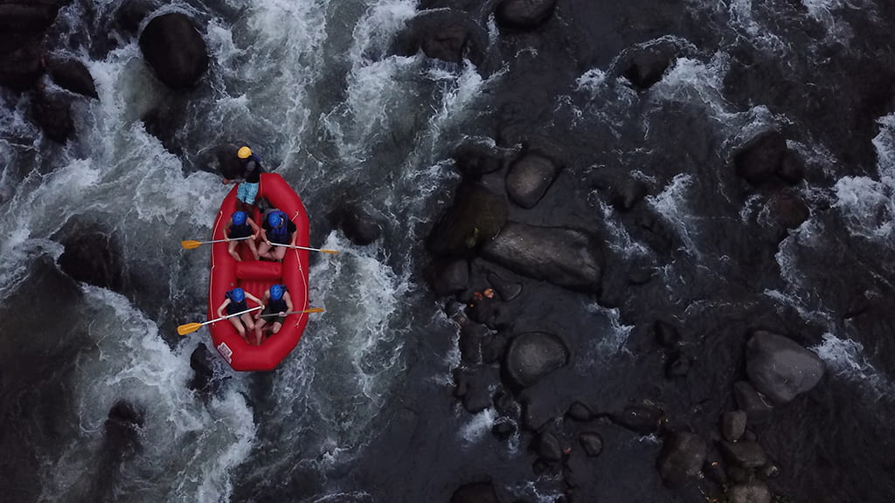
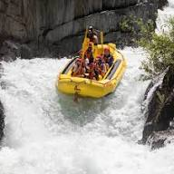
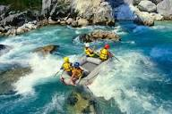
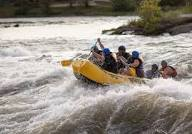
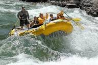
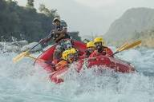

White Water Rafting
The history of commercial white water rafting companies began in the 1940s and expanded into a global industry during the 1960s.

History
Whitewater rafting can be traced back to 1811 when the first recorded attempt to navigate the Snake River in Wyoming was planned. With no training, experience, or proper equipment, the river was found to be too difficult and dangerous. Hence, it was given the nickname “Mad River.”
Whitewater rafting can be traced back to 1811 when the first recorded attempt to navigate the Snake River in Wyoming was planned. With no training, experience, or proper equipment, the river was found to be too difficult and dangerous. Hence, it was given the nickname “Mad River.”
Adventure Awaits You!




